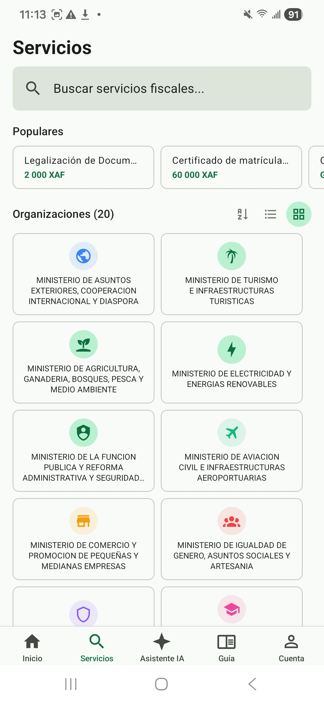
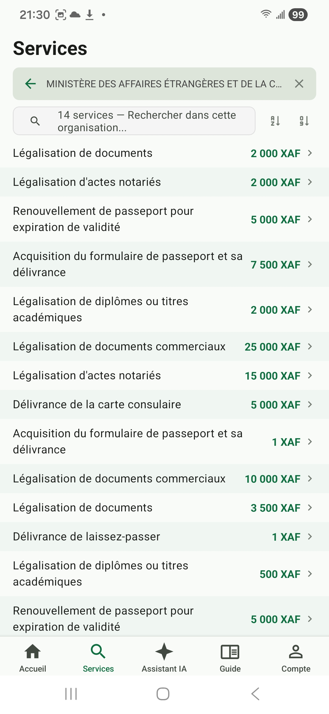
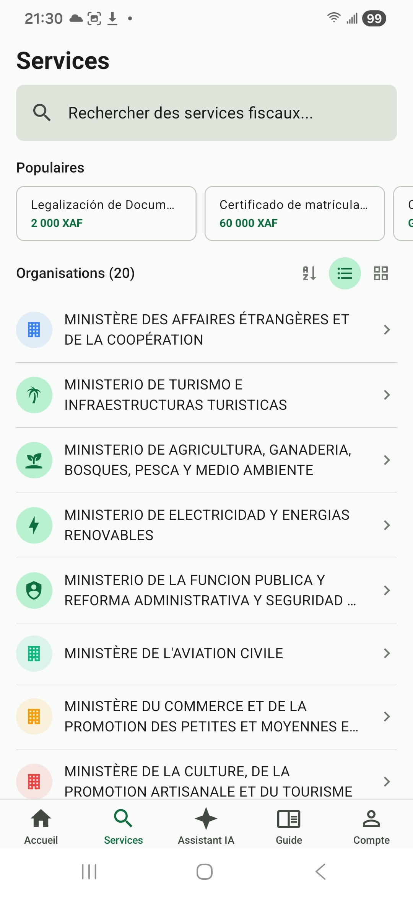
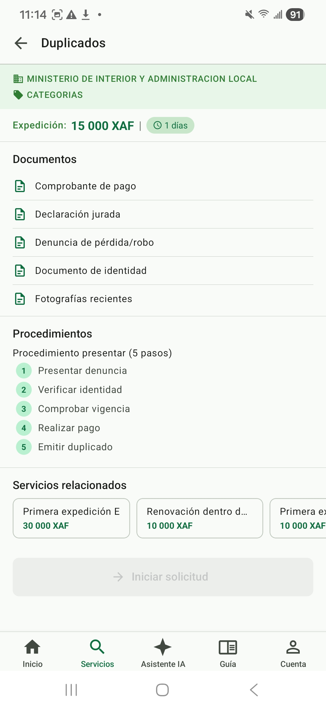

Explorar el catálogo de servicios
Descubra los 873 servicios fiscales y administrativos disponibles en Facil — sin necesidad de iniciar sesión. Filtre por ministerio, busque por palabra clave y consulte los detalles de cada trámite.
1. ¿Qué es el catálogo de servicios?
Facil reúne en un solo lugar 873 servicios fiscales y administrativos ofrecidos por 20 entidades gubernamentales de la República de Guinea Ecuatorial. Cada servicio incluye la información completa que necesita: documentos requeridos, procedimientos, tarifas oficiales, plazos y entidad emisora.
2. Acceder al catálogo
El acceso al catálogo es público y se hace en pocos pasos:
- Abra taxasge.emacsah.com en su navegador (versión Web) o la aplicación Facil en su teléfono (versión Móvil).
- En la pantalla de inicio, pulse la tarjeta «Servicios».
- Se mostrará la lista completa de los 873 servicios disponibles, agrupados por entidad.

3. Buscar y filtrar
Para encontrar rápidamente un servicio entre los 873 disponibles, dispone de tres herramientas combinables:
Búsqueda por palabra clave
En la barra superior, escriba el nombre del trámite que busca (ejemplo: «pasaporte», «licencia comercial», «IRPF»). La búsqueda funciona por sinónimos: «conducir» también encontrará «permis de conduire».
Filtro por entidad
Pulse el nombre de una entidad (CNEDOGE, DGT, Tesoro, Extranjería, Ayuntamiento, Cámara, etc.) para mostrar únicamente los servicios que ofrece.

Vista en cuadrícula o en lista
Puede alternar entre vista en cuadrícula (más visual) y vista en lista (más compacta) mediante los botones de la esquina superior derecha.

4. Detalle de un servicio
Pulse cualquier servicio en la lista para abrir su ficha detallada. Cada ficha contiene 5 secciones:
| Sección | Contenido |
|---|---|
| Título y entidad | Nombre oficial del servicio + ministerio o entidad emisora |
| Descripción | Para qué sirve el trámite, en qué casos solicitarlo |
| Documentos requeridos | Lista exhaustiva de los documentos a aportar (originales y copias) |
| Procedimientos | Pasos a seguir, en orden, con indicación del lugar y plazo de cada uno |
| Tarifa | Coste oficial en XAF (Franco CFA), incluyendo desglose si procede |
| Servicios relacionados | Otros trámites complementarios que podría necesitar al mismo tiempo |

5. Iniciar el trámite
Una vez consultada la ficha, puede iniciar el trámite pulsando el botón «Iniciar la demanda». Este botón requiere haber iniciado sesión: si aún no tiene cuenta, consulte la página Crear cuenta.
El proceso completo de creación de una solicitud (asistente paso a paso, subida de documentos, pago) se describe detalladamente en las páginas Iniciar trámite (Web) y Iniciar trámite (Móvil).
6. Diferencias Web y Móvil
Tanto la versión Web como la aplicación Móvil ofrecen acceso completo al catálogo. Los matices:
| Función | Versión Web | Versión Móvil |
|---|---|---|
| Vista cuadrícula | ✅ | ✅ |
| Vista lista | ✅ | ✅ |
| Filtro por entidad | ✅ | ✅ |
| Búsqueda por palabra clave | ✅ | ✅ |
| Tabla comparativa de varios servicios | ✅ | ❌ |
| Compartir un servicio | URL copiable | Compartir nativo (WhatsApp, SMS...) |
| Funcionamiento sin conexión | ❌ | Caché últimos servicios consultados |